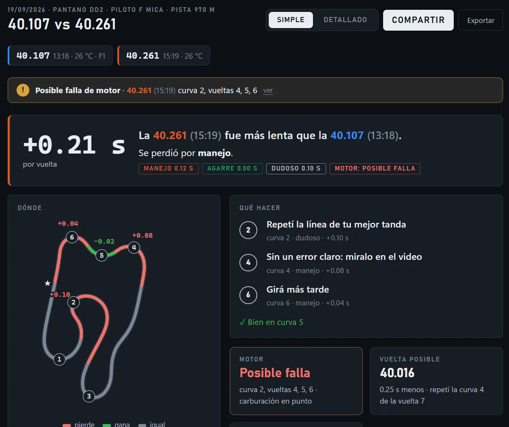
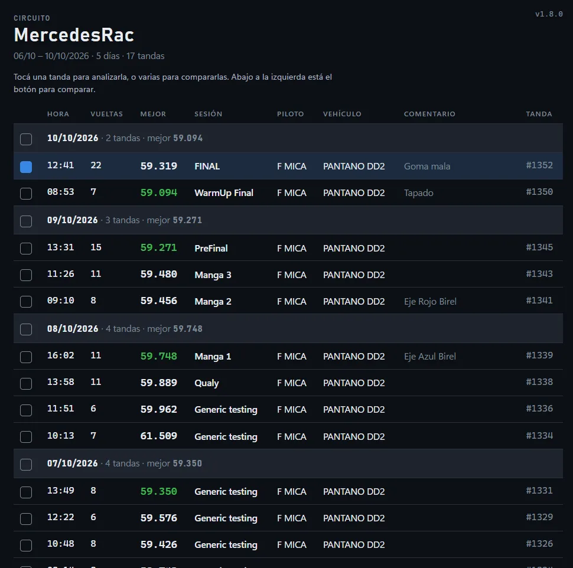
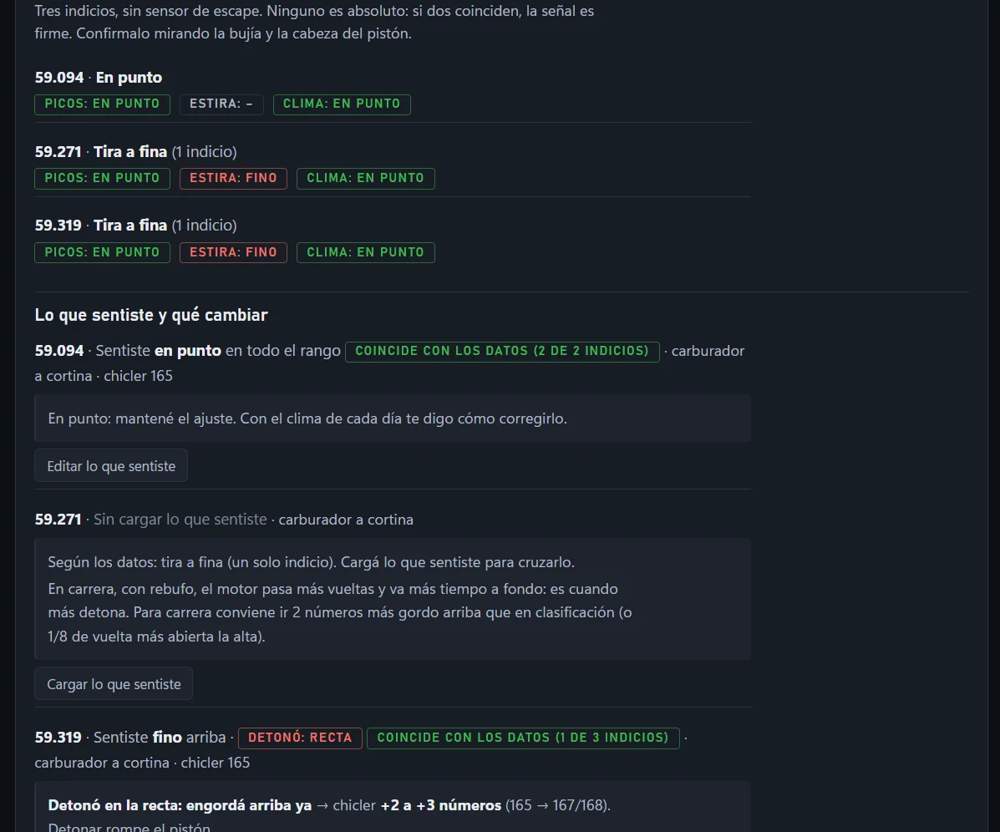
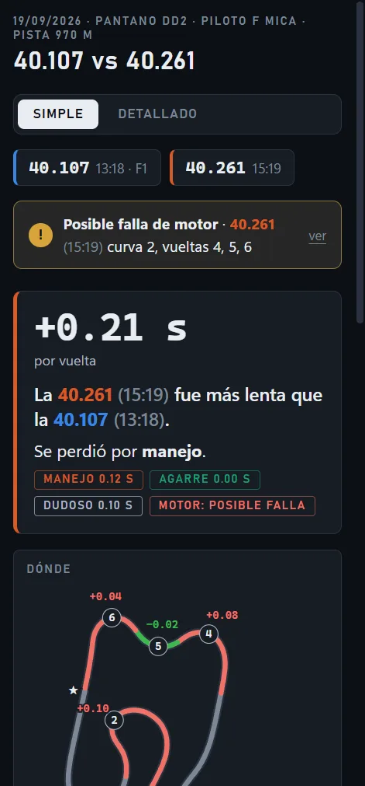

Sabé en qué curva perdés tiempo y por qué.
Cargá tus tandas y en segundos te dice cuánto perdés, en qué curva, si es manejo o agarre, y cómo anduvo el motor. Sin planillas, en castellano y pensado para pilotos y mecánicos.
Sin tarjeta para la prueba. Tus archivos no salen de tu computadora.

Todo lo que te dice una tanda
Elegí una tanda para ver tu vuelta óptima, o varias para compararlas.
Dónde perdés
Curva por curva y por sectores: tiempo, velocidad en el vértice, frenada, aceleración y línea. Te marca las 3 curvas que más te cuestan.
¿Manejo o agarre?
Compara la G lateral que usaste contra la que el kart te dio en la tanda: si fue el piloto, las gomas o el setup.
Lo que ya hiciste bien
Junta tus mejores curvas y te dice qué hiciste distinto en cada una para que lo repitas.
Potencia y fallas
Curva de potencia en HP, comparación entre tandas con margen de error y detección de cortes de encendido por curva.
Gordo, fino o en punto
Tres indicios sin sensor de escape, cruzados con lo que sentiste. Te sugiere el chicler según el clima del día.
Link, QR y PDF
Mostrale el análisis a tu mecánico o a tu equipo en el celular, aunque no estén en la pista.

Tus tandas, ordenadas como en la pista
Elegís la carpeta donde guardás los archivos de la MyChron y la app arma la lista por circuito y por día, con la sesión (manga, prefinal, final) y el comentario de cada tanda.
- Setup, clima y temperatura de agua en cada tanda.
- Transmisión: qué corona te deja en las RPM justas al final de la recta.
- Video del onboard sincronizado con la telemetría.
Carburación sin sensor de escape
Contale cómo sentiste el motor y si detonó. La app lo cruza con los datos (dónde llega el pico de RPM, cuánto estira arriba, el clima y la temperatura de agua) y te propone el cambio concreto: números de chicler, aguja, o vueltas de alta y baja en carburadores a membrana.


En la PC o en el celular
Programa para Windows que funciona sin internet en el box, y versión web que corre en el navegador. Compartí cualquier análisis con un QR y abrilo en el teléfono.
Cronómetros
Precios
7 días gratis con todo. Después elegís el plan. Cancelás cuando quieras desde la app.
Simple
- Analizar y comparar tandas
- Análisis simple: dónde perdés y qué hacer
- Vuelta óptima y circuito
- Exportar a PDF
- Análisis detallado
- Motor, carburación y setup
- Compartir por link y QR
Pro
- Todo lo del plan Simple
- Análisis detallado: curvas, sectores, G
- Motor, carburación y transmisión
- Setup por tanda y video sincronizado
- Compartir por link y QR
Preguntas
¿Mis archivos se suben a algún lado?
No. El análisis se hace en tu computadora o en tu navegador. Solo viaja un resumen anónimo de cada tanda (circuito, kart, mejor tiempo) que podés desactivar, y la copia del reporte si vos elegís compartirlo por link.
¿Necesito internet en la pista?
El programa de Windows funciona sin internet. Solo necesita conectarse una vez cada 7 días para confirmar tu suscripción.
¿Qué cronómetros funcionan?
Hoy, los archivos .xrk de AiM MyChron (los que descarga Race Studio 3). Estamos sumando Unipro y Alfano.
¿Cómo cancelo?
Desde la app: Tu cuenta → Dar de baja la suscripción. Seguís usando lo que pagaste hasta el final del período y no se te cobra más. Tenés además 10 días desde el pago para arrepentirte y que te devolvamos todo.
¿Cómo pago?
En Argentina, en pesos con Mercado Pago (tarjeta de crédito, débito o dinero en cuenta). Desde otros países, en dólares con tarjeta internacional.
¿Las sugerencias de carburación son seguras?
Son orientativas: salen de los datos y de lo que contás que sentiste. Confirmalas siempre mirando la bujía y la cabeza del pistón, y con tu mecánico. Una mezcla demasiado fina puede romper el motor.